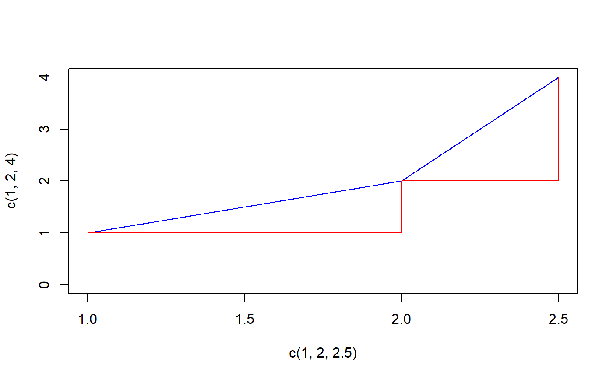

AUC.RdCalculate the area under the curve with a naive algorithm and with a more elaborated spline approach. The curve must be given by vectors of xy-coordinates.
AUC(x, y, method = c("trapezoid", "step", "spline"), na.rm = FALSE)
| x, y | the xy-points of the curve |
|---|---|
| method | can be |
| na.rm | logical, indicating whether |
If method is set to "trapezoid" then the curve is formed by connecting all points by a direct line (composite trapezoid rule). If "step" is chosen then a stepwise connection of two points is used.
For calculating the area under a spline interpolation the splinefun function is used in combination
with integrate.
The AUC function will handle unsorted x values (by sorting x) and ties for the x values (by ignoring duplicates).
Numeric value of the area under the curve.
#> [1] 2#> [1] 4.5#> [1] 3#> [1] 1.999958#> [1] 2